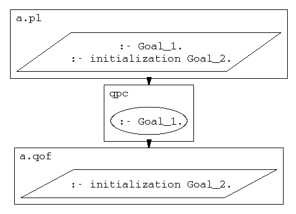

The initialization/1 predicate is an important complement to the
embedded directive construct :- Goal appearing in
a file being consulted or compiled, and can in many cases not only
replace the directive, but also make the code work better when used in
stand-alone programs and runtime systems.
The main reason for this is that :- Goal directive is executed
at compile-time, not when the file in which the construct occurs is
actually loaded into a running system. This causes no problems within
development systems, but if we want to save states and
compile programs into qof-files, link them together, and later start
them up again, problems arise because:
:- Goalqpc to compile source code into a qof-file, your
directives will be run during this compilation, not when you load the
qof-file or start up a stand-alone system to which the qof-file has
been linked.
The initialization/1 predicate,
on the other hand, provides a way of letting initialization
routines be called when a file is actually loaded or a system
containing the file is started up. This allows for correct initialization
in stand-alone programs and runtime systems; therefore a recommended
programming style is to use initialization/1 instead of a bare
:- Goal construct whenever appropriate.
In the following figure, Goal_1 might typically be
an operator declaration and Goal_2, an initialization predicate that
modifies the database.

The initialization goal, Goal_2, is defined to be run when:
:- initialization Goal:- initialization Goal:- initialization Goalinitialization(Goal) was called before the state was saved.
If several
initialization goals were defined in the system, the order in which they
are run upon a restore is not defined.
(:- initialization Goal) directive.